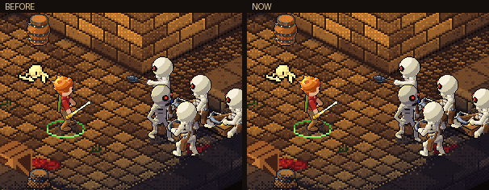
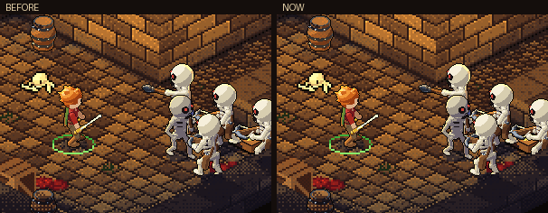
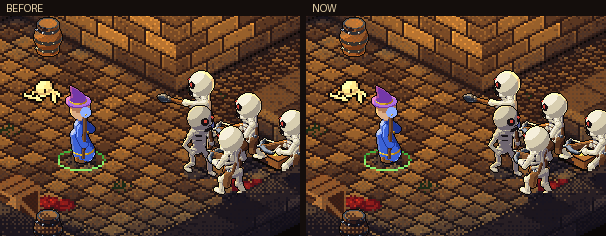
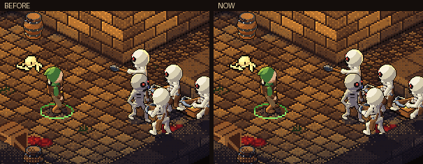
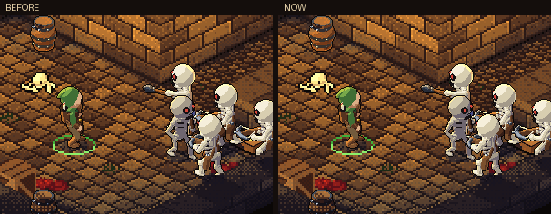
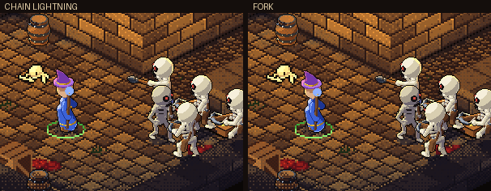
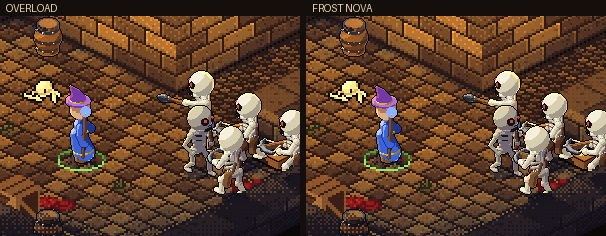
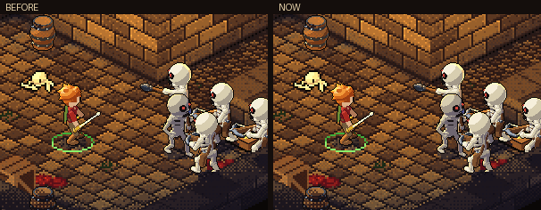
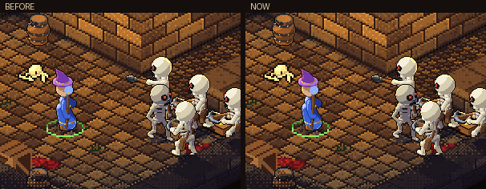

<title>Lightning and Ground Slam</title>
<meta name="claude:viewport-fit-sides" content="cover">
<link rel="stylesheet" href="https://fonts.googleapis.com/css2?family=Cinzel:wght@600&family=Source+Sans+3:wght@400;600&display=swap">
<style>
  /* the game's crypt colors, one dark look (same frame as the other round pages); a single column of clips with notes under each */
  :root {
    --crypt: #0d0908; --panel: #18110e; --ember: #c9a77c; --bone: #e8dcc4; --dim: #8a7660; --rule: #2e221b; --bolt: #8fb0ff;
    --display: 'Cinzel', 'Trajan Pro', Georgia, serif; --body: 'Source Sans 3', 'Segoe UI', system-ui, sans-serif;
    color-scheme: dark;
  }
  html, body { background: var(--crypt); color: var(--bone); }
  body { font: 16px/1.5 var(--body); margin: 0; padding-left: max(16px, env(safe-area-inset-left, 0px)); padding-right: max(16px, env(safe-area-inset-right, 0px)); padding-block: 28px 48px; }
  main { max-width: 680px; margin: 0 auto; display: grid; gap: 36px; }
  section { display: grid; gap: 12px; min-width: 0; }
  h1 { font: 600 1.6rem/1.2 var(--display); color: var(--ember); margin: 0 0 6px; letter-spacing: 0.04em; text-wrap: balance; }
  h2 { font: 600 1.05rem/1.3 var(--display); color: var(--ember); margin: 0; letter-spacing: 0.05em; text-wrap: balance; }
  p, ul { margin: 0; max-width: 64ch; }
  ul { padding-left: 1.2em; display: grid; gap: 4px; }
  .lede { color: var(--dim); }
  figure { margin: 0; display: grid; gap: 8px; }
  .frame { background: var(--panel); border: 1px solid var(--rule); padding: 6px; }
  .frame img { display: block; width: 100%; height: auto; image-rendering: pixelated; }
  figcaption { color: var(--dim); font-size: 0.92rem; }
  strong { color: var(--bone); }
  .bolt { color: var(--bolt); }
</style>
<main>
  <header>
    <h1>Lightning and Ground Slam</h1>
    <p class="lede">Dungeons of Bones, round 65. Chain Lightning replaces Blink, and the skills that looked weakest got a visual pass: Ground Slam, Cone of Cold, Meteor and the ranger's arrows. Each clip is the same crypt room, before on the left and now on the right, looping.</p>
  </header>

  <section>
    <h2>Second pass: the slam's jump, and the rest</h2>
    <figure><div class="frame"></div><figcaption>Ground Slam, last version on the left, now on the right.</figcaption></figure>
    <ul>
      <li>Every version of the slam jumps: plain, Full Circle, Fissure and Aftershock. Aftershock now hops a second time for its second, weaker slam.</li>
      <li>More oomph: a higher jump (25 px), dust kicked up on takeoff, a longer hold on impact, the view punching down, a flash off the strike and a ring of dust round his feet.</li>
    </ul>
    <figure><div class="frame"></div><figcaption>Aftershock: two jumps, two slams.</figcaption></figure>
    <figure><div class="frame"></div><figcaption>Leap: the landing breaks the ground like the slam.</figcaption></figure>
    <figure><div class="frame"></div><figcaption>Arcane Storm (the mage's ultimate): Chain Lightning's bolts from the sky.</figcaption></figure>
    <figure><div class="frame"></div><figcaption>Snare Trap: twice the size, real teeth, and a dashed ring that shows its reach once armed.</figcaption></figure>
    <figure><div class="frame"></div><figcaption>Hunter's Mark: a bold reticle under the target and an arrow over it.</figcaption></figure>
    <figure><div class="frame"></div><figcaption>Evasive Leap: a higher hop that leaves afterimages.</figcaption></figure>
    <p>Also: Whirlwind throws sparks off every enemy its blades hit and swirls dust round his feet.</p>
  </section>

  <section>
    <h2 class="bolt">Chain Lightning</h2>
    <figure><div class="frame"></div><figcaption>Plain on the left, Fork on the right.</figcaption></figure>
    <ul>
      <li>The mage's fourth skill (level 4), in Blink's place. A short charge crackles round the staff, then a jagged bolt hits the nearest enemy and jumps on to the next nearest it hasn't hit, up to five, one jump every 70 ms.</li>
      <li><strong>Shocked:</strong> every enemy it hits takes 25% more damage from everything for 3 seconds, and crackles so you can see it.</li>
      <li><strong>Fork</strong> splits in two at every jump, up to eight enemies. <strong>Overload</strong> is one huge bolt that stuns, with one jump. <strong>Conductor</strong> jumps twice as far to and through chilled or frozen enemies, so it pairs with Cone of Cold.</li>
    </ul>
    <figure><div class="frame"></div><figcaption>Overload on the left; Frost Nova (a Cone of Cold modifier) on the right.</figcaption></figure>
  </section>

  <section>
    <h2>Two new rules</h2>
    <ul>
      <li><strong>Shatter:</strong> fire (Fireball, Meteor) or a heavy blow on a frozen enemy shatters the ice: 1.8 times the damage, a burst of ice, and it's free. Cone of Cold, then Meteor, now pays off even more.</li>
      <li><strong>Magic missile gives mana back:</strong> 3 mana per hit, so it powers your big spells between casts.</li>
    </ul>
  </section>

  <section>
    <h2>Ground Slam</h2>
    <figure><div class="frame"></div><figcaption>Before on the left, now on the right.</figcaption></figure>
    <ul>
      <li>He jumps into it: a crouch with the weapon raised, a quick spring up with it held high over his head, then down hard into the slam (it lands 0.32 s after the tap).</li>
      <li>Stone slabs burst up out of the floor in a wave rolling out from the blade, then sink back.</li>
      <li>A crater is pressed into the floor where the blade bit, and it stays like the cracks do.</li>
      <li>Dust clouds billow out along the front, the blow holds everything for a beat, and the view jolts toward it.</li>
      <li>Full Circle throws the slabs up all round you (none in front of your own legs), and Fissure throws them up along the crack as it races out.</li>
    </ul>
    <figure><div class="frame"></div><figcaption>Fissure, before and now.</figcaption></figure>
  </section>

  <section>
    <h2>Cone of Cold</h2>
    <figure><div class="frame"></div><figcaption>Before on the left, now on the right.</figcaption></figure>
    <ul>
      <li>A cloud of frost rolls out of the staff over the whole cone, swelling and thinning as it goes, so you still see the enemies through it.</li>
      <li>Ice needles streak out ahead of the cloud.</li>
      <li>Every enemy it freezes is locked in ice: pale crystals jut up round its feet and glint, then melt away as it thaws.</li>
    </ul>
  </section>

  <section>
    <h2>Meteor and arrows</h2>
    <figure><div class="frame"></div><figcaption>Meteor, before and now.</figcaption></figure>
    <ul>
      <li>Meteor leaves a crater and throws up a ring of dust, with a harder shake.</li>
      <li>The ranger's arrows leave a bright tracer streak behind them, so a volley reads as fast.</li>
    </ul>
  </section>
</main>
